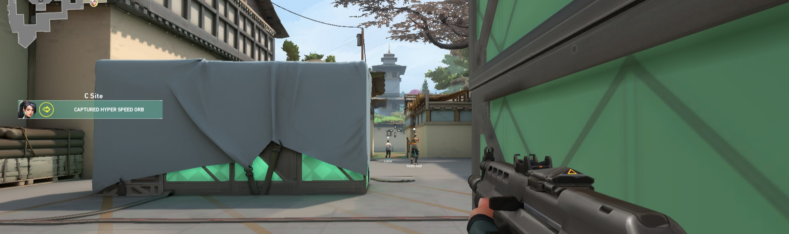
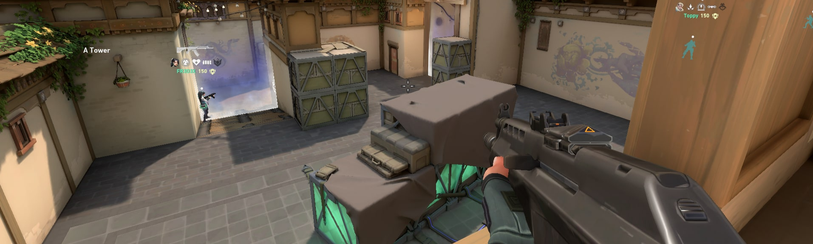

Haven é o mapa mais diferente e "ousado" de Valorant. Uma rápida olhada na imagem abaixo já revela o motivo: ele conta com três bombsites! Apesar de causar estranhamento e parecer extremamente favorável para os Atacantes, Haven é muito balanceado e permite rotações muito rápidas por parte da defesa.
Por ter 3 bombsites, Haven se destaca também no número de pontos de interesse no mapa. Ao total, são cinco áreas diferentes que os Atacantes podem usar para avançar em direção ao objetivo. Cada uma dessas cinco regiões precisa ser vigiada por um Defensor, de preferência.
Bombsite A: O Bombsite A é o único que exige a presença de dois Defensores, já que pode ser acessado diretamente através do Longo A e do Curto A. Mesmo permitindo defesas avançadas em ambas essas regiões, o Bombsite A é geralmente defendido por jogadores dentro do site, seja através das caixas verdes, na Torre A (também chamada de Céu) ou embaixo da janela (também chamado de Inferno).
Bombsite B: O único bombsite fechado na Haven, o Bombsite B é o que pode ser acessado mais rapidamente pelos Atacantes através do Pátio Meio. Por esse motivo, é preferível que a área seja vigada por um Agente com boas habilidades defensivas como Sage ou Cypher, já que a entrada estreita e o ambiente fechado são perfeitos para suas skills.
Apesar de ser o mais suscetível a rushes, o Bombsite B também pode receber reforço de ambos os lados da defesa, já que as rotações para ele são extremamente rápidas.
Bombsite C: O Bombsite C é o mais aberto do mapa. Seu acesso se dá, principalmente, através do Longo C e, em menor escala, pelo Curto C após os Atacantes passarem pelas Portas. Mesmo sendo tão amplo, um Defensor é suficiente para segurar a área, já que a rotação do Defensor da Janela C é tão rápida. Snipers também são bem-vindos aqui.